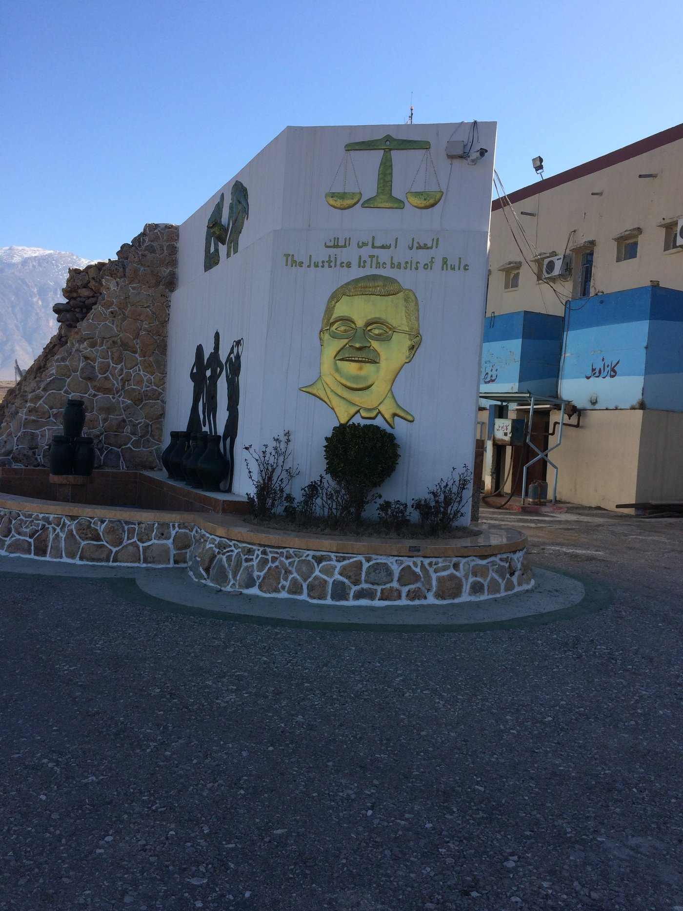

A prison block below the mountains, Sulaymaniyah governorate, northern Iraq (Revkin 2017)

The entrance to Fort Suse Federal Prison (سجن سوسي الفدرالي), northern Iraq (Revkin 2017)

A monument at a prison entrance reading “Justice is the basis of rule” (العدل أساس الملك) (Revkin 2017)
Back to Research Areas or Policy & NGO Reports.